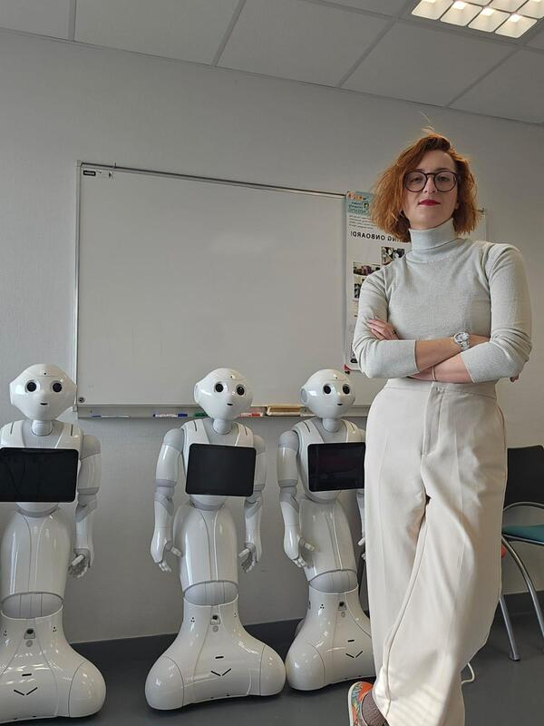
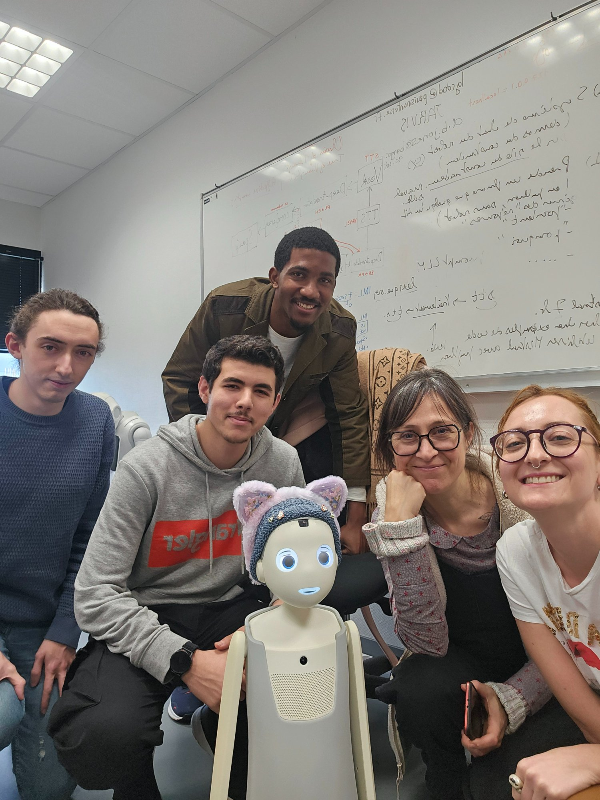
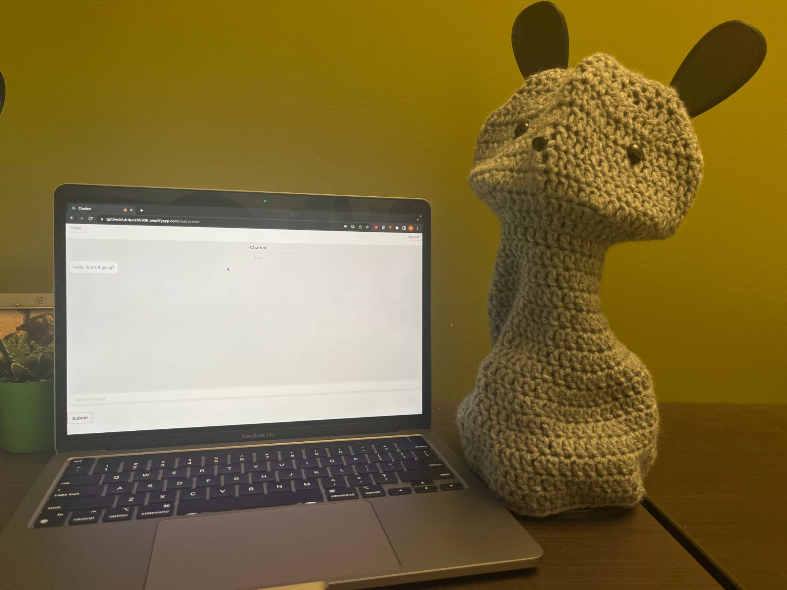
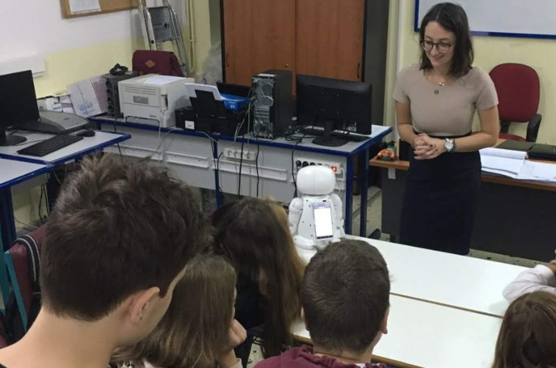
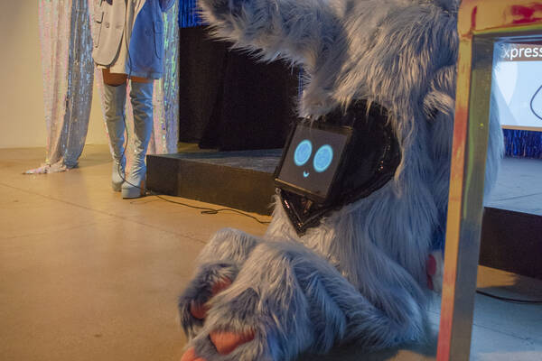
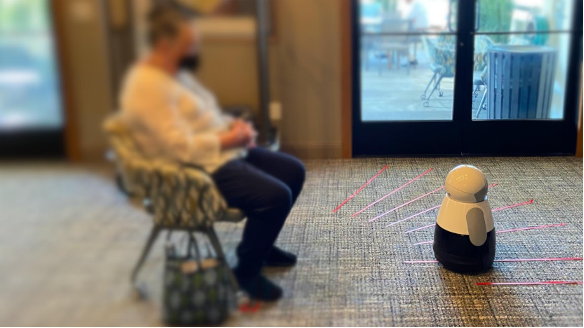
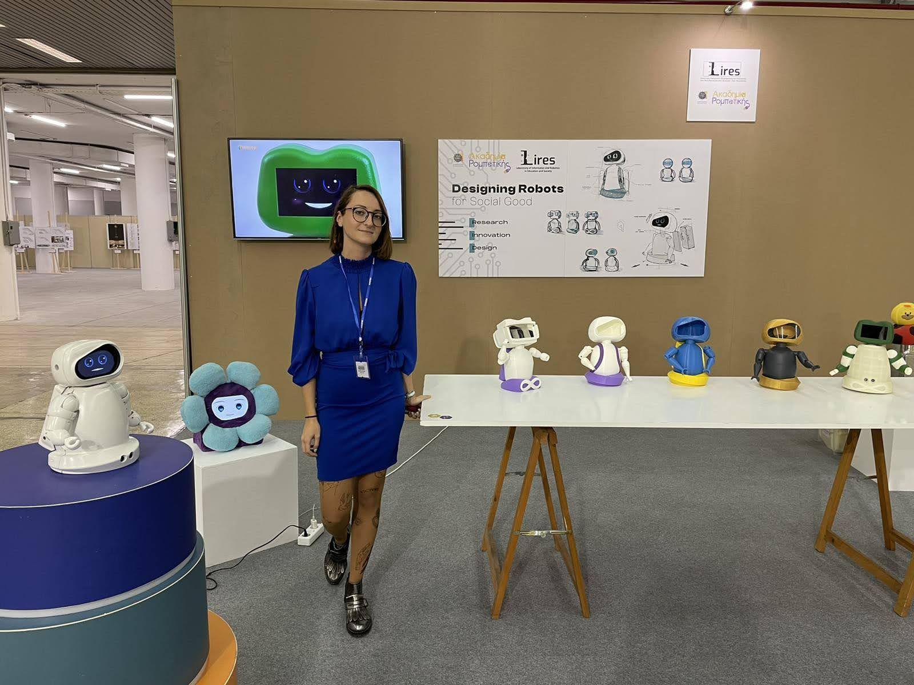

Post-Doc @ ENIB / Lab-STICC CNRS, France · External Collaborator @ USC Interaction Lab
I am a human-centered researcher and lecturer specializing in socially intelligent technologies, including robotics and AI. I design, build, and test robotic systems that respond to human needs, values, and everyday experiences.

I am a Human-Robot Interaction researcher combining Psychology, Engineering, Computer Science, and Robotics, with a purpose to build robots for social good. Currently a Post-Doctoral Researcher at the Brest National Engineering School (ENIB) and Lab-STICC CNRS (Groups: RAMBO, COMMEDIA) in France, and an External Collaborator at the Interaction Lab, Viterbi School of Engineering, University of Southern California.
My work applies qualitative and quantitative methods to put humans at the centre of every design process — from socially assistive robots for education and healthcare, to embodied conversational agents supporting isolated and elderly populations.
I am passionate about finding the ideal specifications for a robot or smart device based on users' needs, testing usability, and building the narrative that connects technology and people.
Fulbright Scholar, Visiting Researcher — USC Interaction Lab, Los Angeles
Twice Research Award for High Quality Research, University of Macedonia (2021 & 2022)
Lecture performances on HRI in collaboration with the Media Arts department at UCLA
Fully-funded PhD from two competitive national scholarships (ESPA 2014–2020 & HFRI 2021–2024)
Invited Speaker at International Robotics Workshops and Webinars
Working in multidisciplinary labs across Europe, UK, and USA since 2014

Embodied Conversational Agent supporting isolated and elderly populations. Building knowledge graphs based on conversational needs, using the NAVEL Robot.

Large deployment with Socially Assistive Robot and LLM chatbot as mental health facilitators providing CBT exercises to undergraduate students.

Designing Human-Robot Interaction experiments with diverse user groups in real educational environments using Pepper and NAO robots.

Designing a queer feminine pet robot — lecture performances on boundaries in robot design and HRI in collaboration with artist Antigoni Tsagkaropoulou.

Testing an AR application to estimate the convenient approach distance for a SAR, evaluated in both elderly and general populations using the Kuri robot.

Physical robot prototypes designed and developed across research labs — exploring form, interaction, and embodiment in socially assistive robotics.
Co-lecturer in the MSc in Computer Science 'Intelligent and Autonomous Interactive Systems'. UBO, ENIB, ENSTA Bretagne and IMT Atlantique collaboration.
Co-lecturer in the MSc in Computer Science 'Intelligent and Autonomous Interactive Systems'. Engineering and computer science students.
Co-lecturer in the MSc 'ICT Applications in Education and Lifelong Learning', Specialization in STEM and Robotics. Multidisciplinary student cohort.
Lecture at the HEPSoS Workshop Seasonal School for engineering students at the Aristotle University of Thessaloniki.
I welcome inquiries from students, collaborators, journalists, and anyone interested in Human-Robot Interaction research. I typically respond within a few days.
Thank you for reaching out.
I'll be in touch soon.